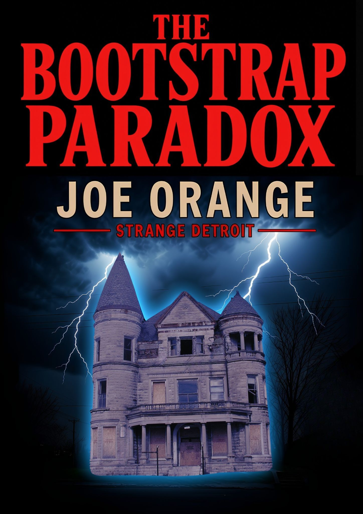
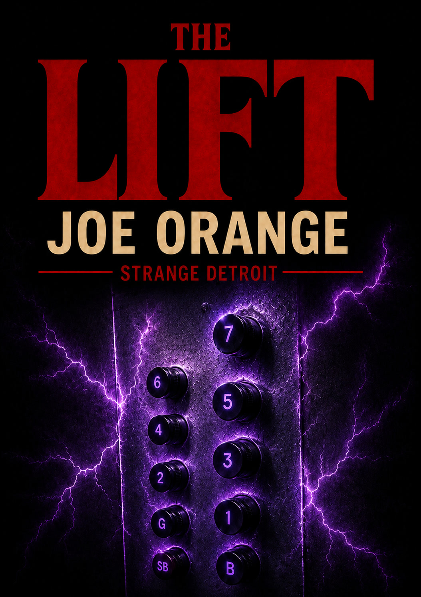

By Joe Orange
The Bootstrap Paradox is available across all major retailers in ebook and audiobook. The Lift is currently available exclusively on Amazon. You can grab the full The Lift audiobook free by signing up for the newsletter, or listen to a preview up top on the homepage.

Strange Detroit #1
The wall in front of you is solid. You've measured it. You know its dimensions. But what if you were wrong? Behind a secret door in a derelict Detroit house is a room that breaks the laws of physics - and a darkness that stretches into forever.
The "All Ebook Stores" link finds your local retailer (Barnes & Noble, Kobo, Apple Books, and more).

Strange Detroit #2
Max needs the money. Night shift, hazardous waste, no questions asked. Just him, a forklift, and a black sphere his supervisor calls the lift. Some lifts don't take you up or down. They take you somewhere else entirely.
The opening of Chapter One
"I lost my thermos," Sam said. "My girlfriend made me hot chocolate..."
"You know, most people in our line of work drink tea or coffee," I said, exiting our work van, the rundown Victorian two-story house before us.
"Why?"
"I can't explain it to you," I said. "It's just something that happens when you become an adult."
"Well, I can't find it."
I took the house in for the first time. It was engulfed in dark foliage on both sides-a two-story Victorian with little of its original blue paint left.
The fact that it hadn't been set on fire or had all its windows broken by squatters, when it was twenty feet from a suburban hellscape, was proof that miracles were still alive in Detroit.
"I remember putting it in the van," said Sam, searching.
"Don't take this the wrong way," I added. "But that pot you like smoking-you're not the type that can get away with that long-term. You don't have the same reservoir of brain cells, shall we say, that most normal people have."
"My mother says my brain is just the same as anyone else's."
"You see, it's the mere fact you have that reply on tap that proves my point."
"I found it," Sam said, searching the passenger seat of the van. "It was under the seat."
I walked to the end of the driveway, measuring with my hands how much fence I'd need to cover the apocalyptic view of the boarded-up muffler shop that sat across the road next to a bus stop. The shop's windows were gone, and there was a collection of rusted scrap metal out front.
The fence would need to be ten feet high, give or take...
The city had put a surveillance camera on top of the muffler shop, which looked down on the bus stop and everything around it, including, no doubt, the front yard of the house where I was now standing. Not that the camera had stopped someone from kicking in all three glass panels of the bus stop the night before. The camera might have even inspired them. It was that part of town, after all.
The front door opened on a shared living room and kitchen. Almost all the furniture was gone, and everything that was left was covered in thick dust.
Sam worked, bringing in our painting gear while I inspected an open floor safe in the kitchen. Its linoleum cover board was beside it. There were signs that someone had tried to drill the safe door years ago but had no luck.
I was no stranger to safes. I'd cracked my fair share in my former life as a professional thief years ago, before I'd learned how to enjoy the slow ride of being a straight shooter. This brand of safe could be opened in under a minute with a strong enough rare-earth magnet by manipulating the deadbolt inside with the magnet from the outside, therefore bypassing any need for a key or combination.
Every time I came across someone using a safe in their house, I felt like explaining to them that they were better off burying their valuables in the backyard in a jar. All a safe was good at was acting as a red herring. Anyone who said otherwise had either no understanding of how easy it was to crack a safe or liked signposting where they kept their valuables. I always buried anything of any real value I had. No one could steal something from you if they had no idea where it was. There was a reason Al Capone's vault was empty and Captain Kidd's treasure was never found.
I went out the back door, opened the fuse box, and turned on the power, then exited the back of the house and checked the backyard. Long grass covered everything except a toolshed, whose side was being gradually undermined by the thick roots of a walnut tree that shaded it. The sea of green went all the way to the backyard fence, which blocked the view of a railway line. In the distance, one of Detroit's cloud makers was puffing out streams of white.
The backyard would be all right once I cut the grass. The toolshed would need to come down, though.
"There are no lightbulbs anywhere," Sam told me as I returned to the hallway. And he was right-no bulbs anywhere.
"Remind me to buy some," I said, studying the ceiling. But then, remembering who I was talking to, I searched for my notebook and made a note with my pencil.
"Remind you to do what?"
"Nothing," I replied.
I went up the staircase to the second floor and walked down the hallway to the master bedroom. A mattress that had seen better days lay propped up against one wall. The bed base was gone. I went to the closet and opened the door, letting loose the strong smell of ancient mothballs. Nothing was inside except a stack of metal coat hangers with a very old pair of red 1950s bowling shoes on top-the leather as hard as rock.
I closed the door and found a lamp on a nightstand. I plugged it in and turned it on; it glowed with its small bulb, but there was a rhythmic flicker. I hoped it was something easy to fix, and not bad wiring. Although, given all the bulbs were missing from below, I guessed it was most likely the latter.
I turned off the lamp and went to the bedroom window, which had a less-than-spectacular view of the second story of the brick house next door. I pulled the thick green curtains back and forth on the curtain rails; they still had life in them.
My goal was just to get the house to livable standards. I wasn't trying to remodel it. If something still worked well enough, I was leaving it. At the moment, I saw no major issues apart from the wiring, which wouldn't be cheap.
I had bought the house at an estate auction last month when I'd learned from a little bird that the Mayor's sister had been buying up properties nearby. I'd smelled something in the works, and it turned out, given the news last week, I'd been right. A major community arts college was to be built on the city dime two blocks down. And although it was unlikely that it would ‘revitalize the district' as the newspapers said, I hoped to turn a profit on the upswing.
Maybe the little bird had some more tips for me? I would have to ask Sam, since it was his grandmother who was the little bird, the secretary for the Mayor. She had let the detail slip to Sam and me when we were painting her fence. It had been lemonade, sandwiches, and a short conversation about how the Mayor's sister was investing in some lower-end district. A very nice old woman who had glasses about as thick as you could wear without toppling over.
It did show you the value of good information. Something I'd learned in my former life. You always had to be aware of what things were in play around you. The world was never static.
Across the hallway was a combined toilet and bathroom. I sat on the wooden seat of the toilet, which lay unconnected to any plumbing, and smoked a cigarette. Everything looked good, and even better when I brought up the water blaster to remove the yellowing between the tiles. The only problem was the toilet had, at one point, maybe with the best intentions, been moved from beside the bathroom sink to where it now sat. I could see where they had paved over the drain, but they hadn't connected any new plumbing to where the toilet now was; no closet flange to drain, no waterline to the tank.
Curry was off the menu, at least for a while. I would just open up the drain again on the other side and reconnect the toilet to where it had been. I was not out to make more work for myself than there needed to be.
I stood before the bathroom sink and tried the faucet. The water ran brown, and the pipes shook; a few seconds later, the water started to clear. Wetting my fingers, I ran them through my hair. Inside the medicine cabinet, I found a pocket knife that someone, for reasons only known to them, had submerged in an ancient bottle of mint Listerine.
I emptied the Listerine and removed the pocket knife. The pungent smell of mouthwash filled the air. The pocket knife was stainless steel, and the blade was still good, but it had led a hard, violent life; deep gashes traced the enamel siding where the faded lettering ‘Luck's Grill 1949' was only barely visible.
My grandfather used to say that you could ignore many things, but not something that had come to you the hard way. After my father went to Vietnam and never came back, I spent a lot of time in his company while my mother worked. Many hours watching him work his craft in smoky pool rooms.
I decided to keep the pocket knife. I clipped it onto the loop of my keyring, and it fit perfectly.
Behind me, Sam came in. "The radio isn't working. It just makes a strange sound. Like popcorn."
"That reminds me," I said. "There may be something wrong with the wiring, so don't plug in your cell phone. It's all right for power tools, but any sensitive electronics are to be kept away from any outlets."
I wet my hair and combed it with my hand. "By the way, there is a large walnut tree out the back. Before we leave, fill one of those plastic bags in the van with as many as you can carry. But don't go wall-nut crazy, though. You eat too many, and you turn into a squirrel."
I was starting to realize that I had finally become one of those middle-aged men who had graduated to dad humor-jokes that had lost all edge and were perfect for any occasion, even daycare.
"I can't do any overtime tonight. It's my girlfriend's birthday. I am taking her to dinner."
"I don't have any extra money to pay you any overtime anyway, not with a baby on the way."
"You're having a baby?"
"I told you last week, and the week before that," I checked my teeth. My gums were still good, and so were my teeth. The trick was not to overbrush; if you did, you brushed away the enamel. "Where are you taking your girlfriend?"
"I'm taking her to that Thai restaurant. The one across from where we painted that motorcycle shop sign."
"Well, I believe your fine observation skills have led you astray once again."
"Why?"
"That place you call a restaurant is really a brothel."
"Really?"
"It is indeed. And I am not saying that from experience, just so you are not confused. It's open knowledge."
"But it looks like a restaurant."
"Well, they have tables, chairs, and a vending machine, so I guess that technically they might qualify." I waited. "Why don't you cook her something?"
"But I never cook anything."
"That's why it would be special. When I found out my wife was pregnant, I cooked her this Indian vegetarian curry. It had tofu in it. Now, I am far from a vegetarian and honestly, I hate tofu. But my wife likes it, and for that reason, it was special, you know, different."
Sam looked confused for a moment.
I asked him what was wrong. I wet my fingers and ran a hand again through my hair.
It was a second before the cogs in his brain started moving again. "You told me to tell you if I ever saw water damage. Not just this house, but any house..."
I froze, turning to him. "I did . . ."
"Well, I think there is bad water damage in the hallway."
Soon we were standing in the middle of the hallway studying a water stain at the base of the skirting board, the wallpaper peeling away and discolored around it. When I bent down, I could already smell dampness. Placing my hand against the skirting board, the wood felt soft-a bad sign, there was a lot of rot there. I removed my hand; my fingers coming away wet.
This was not some leak that occurred only when it rained, which would point to the roof. This was a constant dripping from something like a pipe. But there shouldn't have been any pipes behind the wall to cause any constant leaks. There was a master bedroom down from me and a bathroom across from that. And that was it.
I started tapping around the wall, and when I got to the middle, it had a completely different sound. I was not hitting early nineteenth-century pine anymore, but drywall. I stopped and pushed my blade a few inches into the wall. There was a layer of plaster, and behind it, drywall. My blade hit something hard behind. I dug around a little until I could see the varnished surface on the other side.
"What does that mean?" asked Sam.
"There's a hidden room behind there."
"A hidden room," said Sam, more to himself.
"Well, a door to a hidden room," I added, feeling the wall.
I stepped back and studied the wallpaper. Although old, it did not match the rooms. It was only a slight difference, both being green floral patterns, but the wallpaper in the rooms was early nineteenth-century. The wallpaper in the hallway was much later, maybe late 1980s.
"Why would someone try to hide a door to a room?"
"I can think of a few reasons," I stated. "Given it's Poletown East, Detroit, they're mostly bad ones."
"Should we call the police?"
"Why?"
"Maybe something bad is behind there."
"You know how you are allergic to lobster? Well, for me, just exchange lobster with the police, in regard to me."
"You don't like the police?"
"If there is a dead body behind there, then yes, I guess we will have to call in Detroit's finest. But short of that, I really need to look out for my allergy."
"Are you going to open it?"
"I thought I would wait a while. Maybe come back to it in a few days. Figure it out once we finish painting the house. You know, kind of draw out the mystery for as long as possible until I have a long enough cord to make a noose from. Then put it around my neck and hang myself. Maybe in front of this door. Then they can chalk it up to ‘Death by Curiosity'."
"You're really not going to open it?"
I examined him for a long moment. "Get the crowbar."